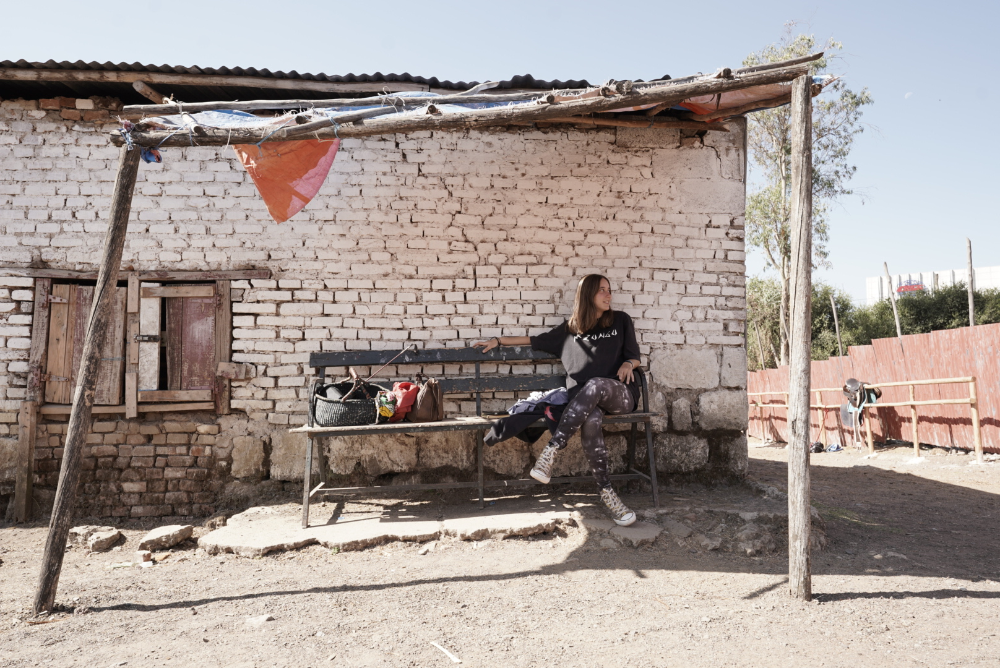

My name is Ilia Verstraete.
I am a bachelor student at the University College Utrecht, studying Liberal Arts and Sciences. My majors are Biology and Earth and Environment. I am very passionate about the environment, conserving biodiversity and anything related to nature. Having grown up in various African countries, I am grateful to have experienced a lot of nature firsthand, especially thanks to my environment-oriented family. I lived in Burkina Faso, Rwanda, Zambia and Ethiopia. Many weekends or holidays were spent in national parks or outdoors.
I decided to follow this GIS course because I was told it is very useful for Earth and Environment majors (among others), and after having taken this lab course, I now understand the value of GIS within our contemporary world. It significantly connects to environmental sciences because of its use in the analysis and visualisation of spatial data, such as land cover, vegetation types, topography, and soil composition, among others. Overall, I found this course quite interesting, and I know that it will be useful to me in the future.
